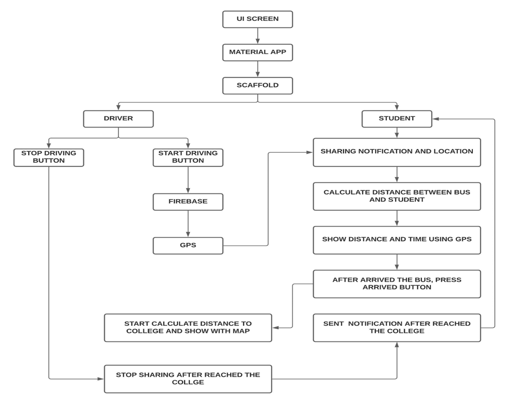

SMART TRAVELLERS APP - Explanation
Back to ProjectsAbstraction
The SMART TRAVELLERS APP (STA) is designed to simplify the travel of Public transport networks(PTNs) it is difficult to use when the user is unfamiliar with the area they are traveling. This is true for both infrequent users(including visitors)and regular users who need to travel to areas with which they are not acquainted. In these situations, adequate on-trip navigation information can substantially ease the use of public transportation and be the driving factor in motivating travelers to prefer it over other modes of transportation. However, estimating the localization of a user is not trivial, although it is critical for providing relevant information. we assess relevant design issues for a modular cost-efficient user-friendly on-trip Navigation service that uses position sensors .By helping travelers move to single-occupancy vehicles to public transportation systems, communities can reduce traffic congestion as well as its environmental impact. Here, we describe our efforts to increase the satisfaction of current public transportation users and help motivate more people to ride.
Objectives
Smart Travelers use, to track the college bus when it arrives at the student’s stop.To ensure that they don’t have to leave the confines of their comfort to travel.
Flutter
Flutter is a cross-platform software development framework that was presented by Google in 2015 and received its first release in May of 2017. Flutter nowadays has steadily grown and provided possibilities not only for iOS and Android mobile development but also for web and desktop applications as well. Let’s dive into the topic and try to understand why it is so popular nowadays.
Dart
Dart is an object-oriented programming language that was first unveiled by Google in 2011. Since then Dart steadily evolved by releasing different features. Among others, it is worth mentioning the “dart2native” feature that allows compiling it for Windows, Linux, and macOS platforms as a desktop application.
Block Diagram

Simulation and Results
The app underwent testing with real users to analyze its performance. Below are images illustrating the results of a typical simulation.